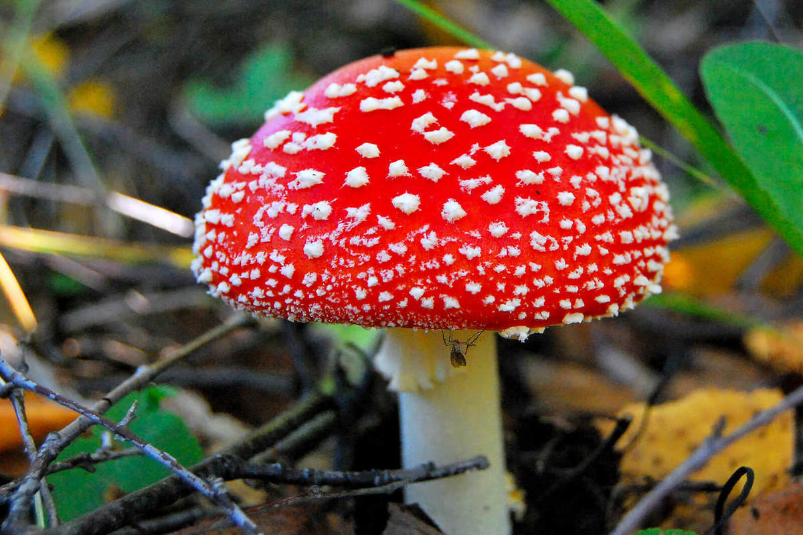

Красный мухомор (ядовит)

Информация
- ШЛЯПКА: шаровидная, позже распростертая, красного или красно-оранжевого цвета, покрыта многочисленными белыми чешуйками. У взрослых грибов края шляпки полосаые из-за полежащих пластинок.
- ПЛАСТИНКИ: свободные, белые, частые, широкие.
- НОЖКА: в начале плотная, затем полая, гладкая, белая, у основания имеет клубневидное утолщение, вверху ножки белое кольцо.
- МЯКОТЬ: белая, под кожице шляпки светло-оранжевого цвета.
- СПОРОВЫЙ ПОРОШОК: белого цвета.
- РАСТЕТ: в лиственных и смешанных лесах летом и осенью.